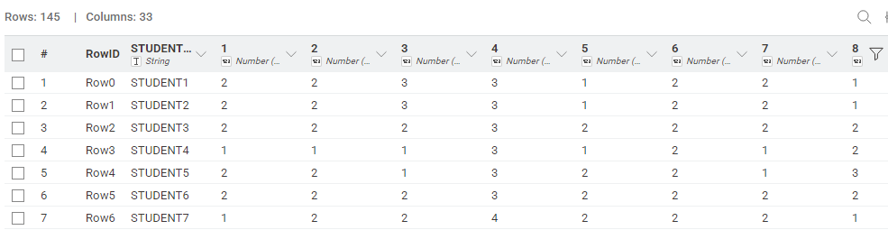
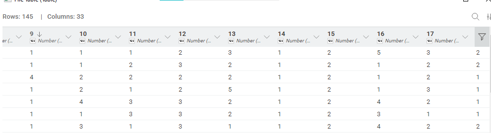
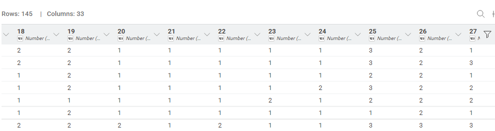
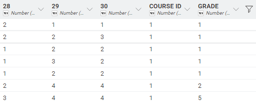
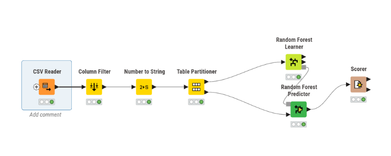
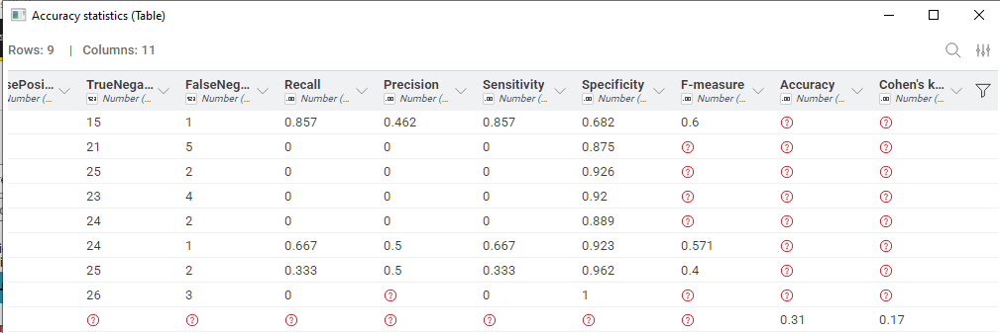
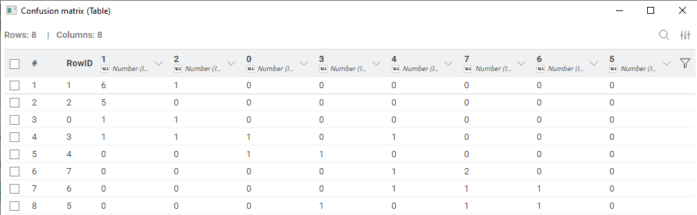
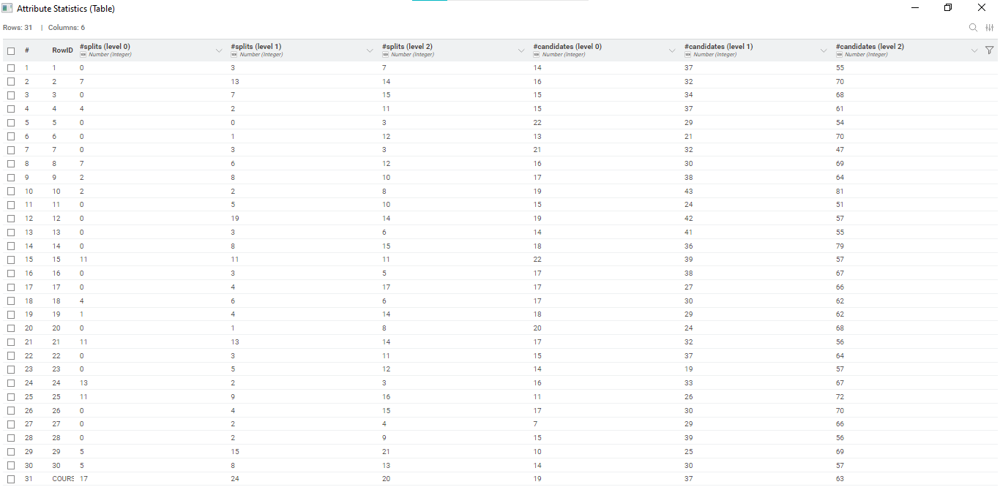

Laporan Analisis Prediktif Kinerja Akademik Mahasiswa Berbasis Algoritma Pembelajaran Mesin (Ensemble Learning)#
1. Latar Belakang dan Signifikansi Studi#
Dalam paradigma pendidikan modern, Educational Data Mining (EDM) memainkan peran krusial dalam evaluasi kebijakan akademik. Analisis ini bertujuan untuk merancang sebuah model prediktif berbasis Machine Learning yang mampu mengklasifikasikan capaian nilai akhir mahasiswa. Secara institusional, sistem ini diimplementasikan sebagai Early Warning System (Sistem Peringatan Dini) yang berbasis bukti (evidence-based). Dengan mendeteksi probabilitas kegagalan mahasiswa sedini mungkin berdasarkan pola kebiasaan belajar dan demografi, pihak fakultas dapat melakukan intervensi preventif sebelum evaluasi akhir semester dilakukan.
2. Karakteristik Dimensionalitas Dataset#
Penelitian ini menggunakan dataset Higher Education Students Performance Evaluation dari UCI Machine Learning Repository yang memiliki tantangan spesifik berupa High Dimensionality berbanding terbalik dengan jumlah sampel (Data Starvation).
Dimensi Observasi: 145 instances (baris data mahasiswa).
Ruang Fitur (Feature Space): Terdiri dari 30 atribut prediktor berskala ordinal (mencakup aspek demografi, latar belakang sosial-ekonomi keluarga, dan metrik keterlibatan akademik), serta 1 atribut kategorikal berupa
COURSE ID. VariabelCOURSE IDdipertahankan karena membawa konteks varians tingkat kesulitan dan standar penilaian antar mata kuliah.Variabel Target (Label): Kolom
GRADE, sebuah variabel multiclass dengan 8 tingkat kategori (0 untuk Gagal, hingga 7 untuk kategori nilai AA/Tertinggi).Reduksi Dimensi Awal: Atribut
STUDENT IDdieliminasi dari ruang fitur karena bersifat sebagai unique identifier yang memicu noise dan tidak memiliki daya prediktif.
Berikut adalah representasi data mentah (raw data) yang digunakan dalam komputasi awal, dieksekusi secara langsung menggunakan kerangka kerja data terstruktur:




3. Arsitektur Metodologi Eksperimen#
Pendekatan analitik diselesaikan menggunakan metode Klasifikasi Multikelas (Multiclass Classification) dengan menerapkan algoritma ansambel Random Forest. Alur kerja (workflow) komputasi disusun melalui tahapan berikut:
Transformasi dan Prapemrosesan Ruang Vektor: Variabel target
GRADEdanCOURSE IDditransformasi secara paksa menjadi tipe data nominal/kategorikal (String). Hal ini menginstruksikan algoritma agar tidak memperlakukan label kelas sebagai nilai numerik kontinu berurutan yang dapat memicu kesalahan komputasi regresi.Partisi Stratifikasi (Stratified Hold-out Validation): Dataset dipartisi menjadi 80% himpunan latih (Training Set) dan 20% himpunan uji (Testing Set). Implementasi Stratified Sampling mutlak dilakukan untuk memitigasi Class Imbalance (ketidakseimbangan kelas), memastikan bahwa proporsi observasi minoritas (seperti mahasiswa dengan GRADE 0) terwakili secara ekuivalen pada fase pelatihan maupun pengujian.
Konfigurasi Pemodelan (Model Training): Algoritma Random Forest dipilih karena ketangguhannya terhadap Curse of Dimensionality pada dataset berukuran kecil. Model dikonfigurasi menggunakan teknik Bootstrap Aggregating (Bagging) dengan pembentukan 100 pohon keputusan (Decision Trees) independen. Metrik pemisahan simpul (node splitting) dievaluasi menggunakan Gini Index atau Gain Ratio guna memaksimalkan homogenitas prediksi.

4. Analisis Diagnostik Kinerja Model#
4.1. Evaluasi Metrik Akurasi dan Probabilitas Dasar (Baseline)#
Berdasarkan inferensi model pada himpunan uji, matriks evaluasi menghasilkan akurasi absolut sebesar 31%.

Dalam konteks klasifikasi 8 kelas yang sangat spesifik, angka probabilitas dasar (random guessing baseline) dihitung menggunakan persamaan \(\frac{1}{N_{class}} = \frac{1}{8} = 12.5\%\). Dengan tingkat akurasi 31%, model ini mendemonstrasikan kekuatan prediktif (predictive power) sebesar 2,48 kali lipat melampaui probabilitas acak murni. Keterbatasan untuk mencapai akurasi absolut yang lebih tinggi (misalnya >80%) sangat dapat dimengerti secara matematis akibat fenomena Data Starvation; memecah himpunan latih yang hanya berisi ~116 observasi ke dalam 8 kategori menyebabkan algoritma kekurangan referensi sampel yang memadai untuk melakukan generalisasi aturan (rule induction) pada kelas-kelas minoritas.
4.2. Dekomposisi Confusion Matrix#
Diagnostik kinerja yang lebih komprehensif divisualisasikan melalui Confusion Matrix. Evaluasi ini membongkar anatomi “kebingungan” prediksi dari algoritma.

Analisis pada matriks difokuskan pada dua area:
True Positives (Diagonal Utama): Konsentrasi observasi pada garis diagonal menunjukkan instansiasi di mana model berhasil memetakan fitur ke kelas target secara sempurna.
Misclassification Margin (Area Luar Diagonal): Kesalahan klasifikasi dievaluasi tingkat keparahannya. Secara empiris, model lebih sering menghasilkan “Salah Tipis” (misal: label aktual GRADE 6, diprediksi GRADE 7 karena proksimitas kedekatan fitur mahasiswa pintar) dibandingkan “Salah Fatal” (label aktual GRADE 0, diprediksi GRADE 7). Ini membuktikan bahwa pohon-pohon keputusan di dalam ansambel telah membentuk aturan logika (decision boundaries) yang rasional dan mendekati kenyataan.
5. Ekstraksi Pengetahuan (Feature Importance)#
Utilitas sejati dari model Random Forest bukan hanya bersembunyi pada akurasi akhir, melainkan pada kapabilitas explainability-nya. Melalui ekstraksi penurunan rata-rata Gini Impurity (Mean Decrease Gini), algoritma menyajikan struktur hierarki prediktor yang paling deterministik terhadap kelulusan mahasiswa.

Berdasarkan ekstraksi fitur tersebut, teridentifikasi bahwa atribut dominan yang mengendalikan pembentukan pohon keputusan bukanlah faktor statis (seperti usia atau demografi dasar), melainkan metrik kebiasaan interaktif (misalnya: frekuensi jam belajar, tingkat kehadiran, dan rekam jejak akademik masa lalu). Temuan ini memvalidasi hipotesis bahwa usaha akademik kognitif memiliki bobot prediktif jauh lebih superior dibandingkan latar belakang sosio-ekonomi.
6. Kesimpulan dan Rekomendasi Lanjutan#
Eksperimen pemodelan Machine Learning ini berhasil mengekstraksi dan merumuskan pola perilaku akademik dari data berdimensi tinggi, menghasilkan kinerja yang jauh melampaui ambang batas probabilitas acak di tengah keterbatasan volume sampel. Model ini membuktikan potensinya sebagai instrumen audit akademik (academic auditing tool).
Rekomendasi untuk Eksperimen Lanjutan (Future Work):
Untuk keperluan implementasi operasional Early Warning System yang membutuhkan akurasi presisi tinggi, disarankan untuk mereduksi kompleksitas target (Target Simplification). Mengonversi 8 kelas kategori menjadi klasifikasi biner sederhana (seperti Lulus vs Gagal) diyakini akan meningkatkan kepadatan sampel per kelas (class density), meminimalisasi noise, dan secara eksponensial mendongkrak persentase akurasi model menuju ambang batas operasional yang optimal.